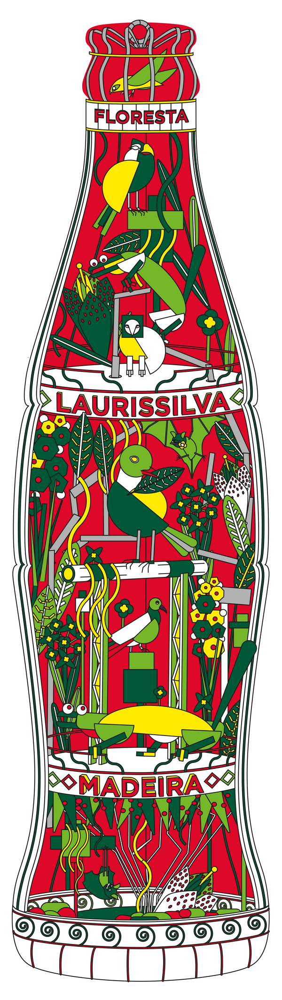
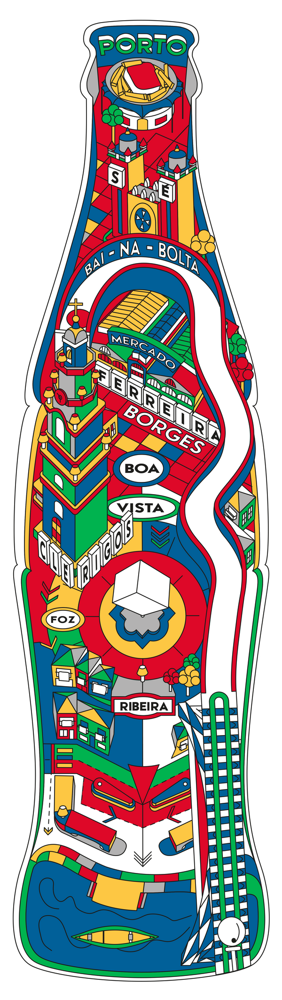
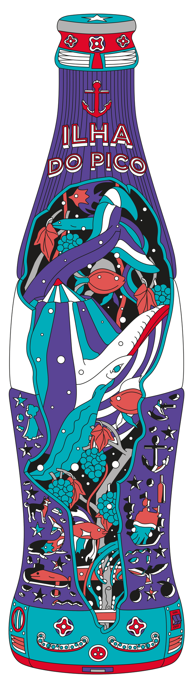
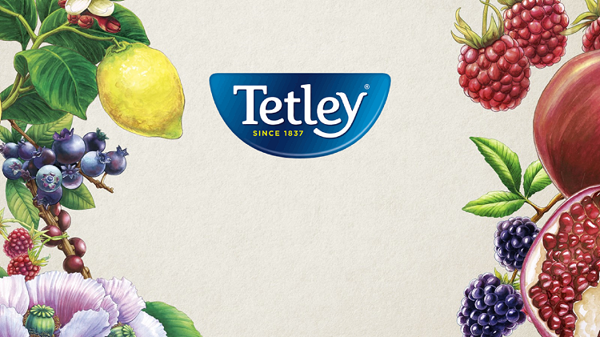
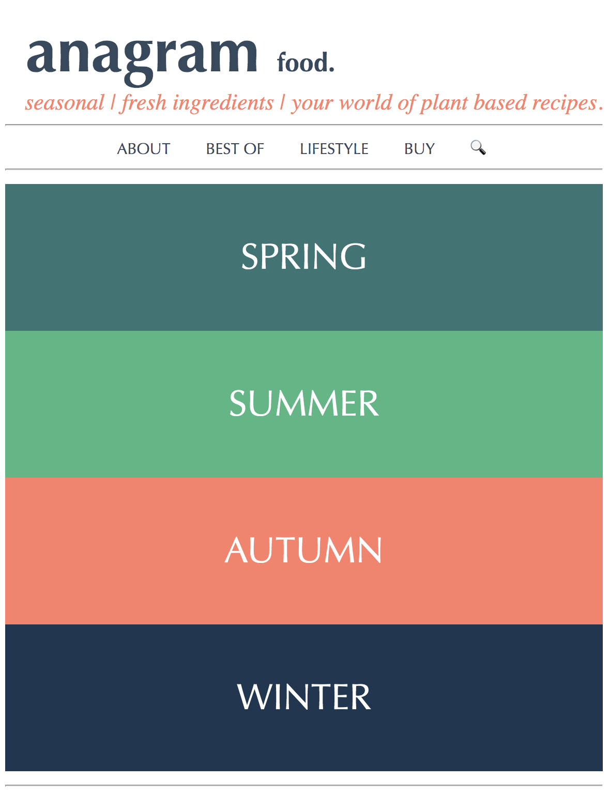
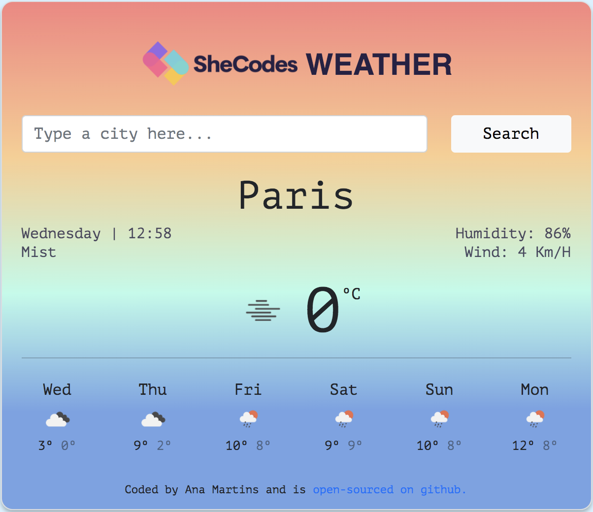

COCA-COLA
"Revisited Patrimony"
PROJECT MANAGER // Coca-Cola promotes Portuguese
cultural heritage with the launch of the “Património Revisitado”
can collection, a tribute by the world's best-known brand to
Portugal and its culture.
More info



COCA-COLA
"Happiness Institute"
PROJECT MANAGER // This website is part of a
Coca-Cola project created in Portugal which studies the conditions
and factors that influence people’s happiness.

SONAE
"Innovation Report"
PROJECT MANAGER // Sonae's "Retail Innovation
Book" is a report that summarizes the work carried out by the
brand in the area of innovation and which is published for the
sixth consecutive year.

COCA-COLA
"Open Portugal Collection"
PROJECT MANAGER // Opening happiness to Portugal,
Coca-Cola wanted to revisit the Portuguese heritage and honor its
heritage with two special collections of cans illustrated with
examples of Portuguese genius.
More info


COCA-COLA
"Open Happiness Campaign"
PROJECT MANAGER // Coca-Cola has a long tradition
of sharing a local sentiment in its brand communication, almost as
long as being cosmopolitan and leading the diffusion of new
aesthetic trends. The cultural values of the city was the brand’s
drive to affirm that its public presence is defined not only by
commercial parameters, but also by the aesthetic intervention with
artistic value in the urban universe.
TETLEY
"Product Design & Repositioning"
PROJECT MANAGER // Tetley's new image and
positioning. The changes to the logo and packaging are intended to
reinforce the focus on the brand's modernity, proximity and
naturalness.

ANAGRAM FOOD
"Blog Project"
FRONT-END DEVELOPER // This was my first attempt
at coding. I took a subject that I'm passionate about and built
the look & feel of an homepage for a food blog dedicated to
plant-based and seasonal ingredients recipes. All about real food!

WEATHER APP
"API Project"
FRONT-END DEVELOPER // Weather application coded
with Vanilla Javascript with Openweathermap API integration for
live weather information. Features a 6 day forecast to your local
time.
Go to project
